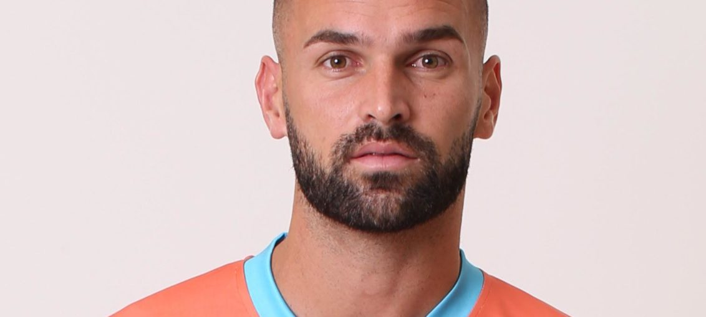

Posted at Date: February 12, 2019
Credit : রাইট স্পোর্টস ওয়েব ডেস্ক
তিন গোলে পিছিয়েও ড্র! ইস্টবেঙ্গলকে সুযোগ এনে দিল নেরোকা
 whatsapp
ইম্ফলে খেলছিল নেরোকা আর চেন্নাই। খেলা শেষে উল্লসিত কলকাতায় ইস্টবেঙ্গল শিবির! দুর্দান্ত বললেও কম। আই লিগে এবারের সেরা ম্যাচ। প্রথমার্ধ শেষে অ্যাওয়ে ম্যাচে ০-৩ এগিয়ে চেন্নাই সিটি এফসি। পেদ্রো মানজির আবার হ্যাটট্রিক। এবারের আই লিগে চতুর্থ। ৩৫, ৪২ ও প্রথমার্ধের অতিরিক্তি প্রথম (৪৫+১) মিনিটের গোলে। লিগে ১৬ গোল মানজির, সর্বোচ্চ উইলিস প্লাজার ১৭ থেকে একটি গোল কম আপাতত। একই আই লিগে চার হ্যাটট্রিক অবশ্য নজিরবিহীন।
দ্বিতীয়ার্ধে ঘরের মাঠে নিজেদের ফিরে পেল নেরোকা। খুমান লাম্পাক স্টেডিয়ামে ৫২ মিনিটে ১-৩ করেছিলেন ফেলিক্স চিদি। ৬৮ মিনিটে ‘ভুটানি রোনালদো’ চেনচো গিয়েলতসেনের গোলে ২-৩। চেনচোর দ্বিতীয় ম্যাচে দ্বিতীয় গোল। আর, অস্ট্রেলীয় আরিন উইলিয়ামস সমতা ফেরান ৮৭ মিনিটে। ম্যাচ জিতে নেওয়ার সুযোগও পেয়েছিল নেরোকা। কিন্তু আর গোল হয়নি। দু-পয়েন্ট নষ্ট করেও চেন্নাই সিটি এফসি শীর্ষেই থাকল, ১৬ ম্যাচে ৩৪ পয়েন্টে। আর নেরোকার ১৭ ম্যাচে ২৬, তালিকায় পঞ্চম।
ইস্টবেঙ্গলের উচ্ছ্বাসের কারণ, পরপর দুটি ম্যাচ জিতলে ধরে ফেলা সম্ভব এখন চেন্নাইকে! ১৪ ম্যাচে ২৮ পয়েন্ট আছে ইস্টবেঙ্গলের। ছয় পয়েন্টের পার্থক্য, মুছে যাবে ঘরের মাঠে যথাক্রমে শিলং লাজং (১৪ ফেব্রুয়ারি) এবং চার্চিল ব্রাদার্সকে (১৭ ফেব্রুয়ারি) হারাতে পারলেই। চেন্নাইও ১৮ ফেব্রুয়ারির আগে আর খেলছে না, ব্যবধান বেড়ে যাওয়ার প্রশ্নও নেই তাই।
একই দিনে সর্বভারতীয় ফুটবল সংস্থা জানিয়ে দিয়েছে, রিয়েল কাশ্মীরের বিরুদ্ধে ইস্টবেঙ্গলের স্থগিত ম্যাচ হবে আগামী ২৮ ফেব্রুয়ারি। কাশ্মীরে আবহাওয়ার উন্নতি হয়েছে গত দু’দিনে। সূচি অনুসারে ২৮ ফেব্রুয়ারি খেলা না হওয়ার কোনও কারণ আপাতত নেই। সে ক্ষেত্রে ইস্টবেঙ্গলের একটাই অসুবিধা – শেষ তিনটি ম্যাচই, যথাক্রমে কাশ্মীর, মিনার্ভা এবং গোকুলমের বিরুদ্ধে, খেলতে হবে বাইরের মাঠে। অর্থাৎ পনের বছর পর যদি জাতীয় খেতাব জিততে হয় কোয়েস ইস্টবেঙ্গলকে, জিততে হবে বাইরে, ঘরের সমর্থকদের সামনে নয়। আবার, সেই লড়াইয়ে থাকতে হলে আগামী পাঁচ ম্যাচে পয়েন্ট হারালেই সমস্যা, যা আবার লিগের দাবি অনুসারে বেশ কঠিন।দেশে এমন একটা টানটান উত্তেজনার আই লিগ থাকতে আইএসএল-এর যে কী প্রয়োজন!
আই লিগে এখন খেতাবি লড়াইয়ে থাকা চার দলের বাকি খেলা –
চেন্নাই সিটি এফসি (১৬ ম্যাচে ৩৪)
১৭) ১৮ ফেব্রুয়ারি বনাম লাজং (বাইরে)
১৮) ২৪ ফেব্রুয়ারি বনাম মোহনবাগান (ঘরে)
১৯) ১ মার্চ বনাম চার্চিল ব্রাদার্স (বাইরে)
২০) বনাম মিনার্ভা (ঘরে), তারিখ ঠিক হয়নি
রিয়েল কাশ্মীর (১৬ ম্যাচে ৩২)
১৭) ১৭ ফেব্রুয়ারি বনাম মিনার্ভা (ঘরে)
১৮) ২৪ ফেব্রুয়ারি বনাম ইন্ডিয়ান অ্যারোজ (বাইরে)
১৯) ২৮ ফেব্রুয়ারি বনাম ইস্টবেঙ্গল (ঘরে)
২০) বনাম নেরোকা (বাইরে),, তারিখ ঠিক হয়নি
চার্চিল ব্রাদার্স (১৭ ম্যাচে ৩০)
১৮) ১৭ ফেব্রুয়ারি বনাম ইস্টবেঙ্গল (বাইরে)
১৯) ১ মার্চ বনাম চেন্নাই (ঘরে)
২০) বনাম আইজল (বাইরে), তারিখ ঠিক হয়নি
ইস্টবেঙ্গল (১৪ ম্যাচে ২৮)
১৫) ১৪ ফেব্রুয়ারি বনাম শিলং লাজং (ঘরে)
১৬) ১৭ ফেব্রুয়ারি বনাম চার্চিল (ঘরে)
১৭) ২৫ ফেব্রুয়ারি বনাম আইজল (ঘরে)
১৮) ২৮ ফেব্রুয়ারি বনাম কাশ্মীর (বাইরে)
১৯) ৩ মার্চ বনাম মিনার্ভা (বাইরে)
২০) বনাম গোকুলম (বাইরে), তারিখ ঠিক হয়নি
Top Stories

Calcutta Sports Journalists' Club requests the pleasure of your company at its annual awards functionMore...

Jasprit Bumrah has been declared fit and he will now be available for selection for India's third Test against England at Trent Bridge. More...

Ronaldo has increased Juventus' standing among Europe's elite. More...